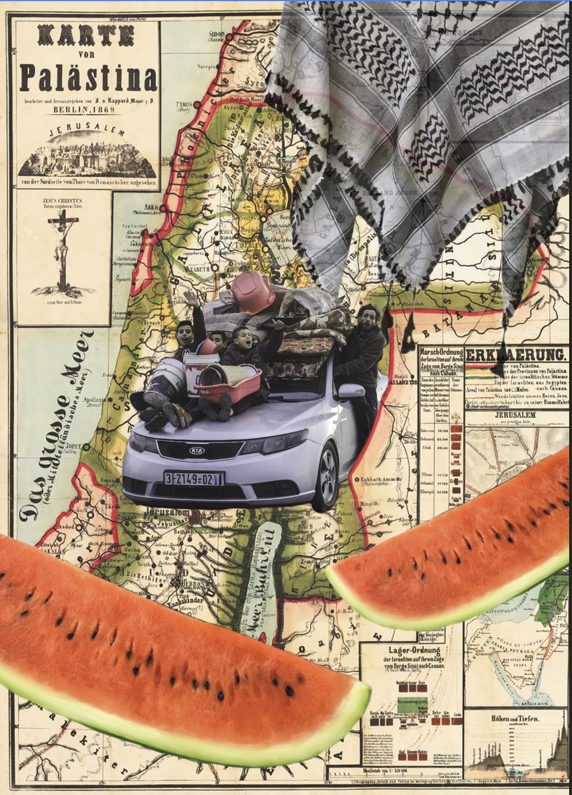
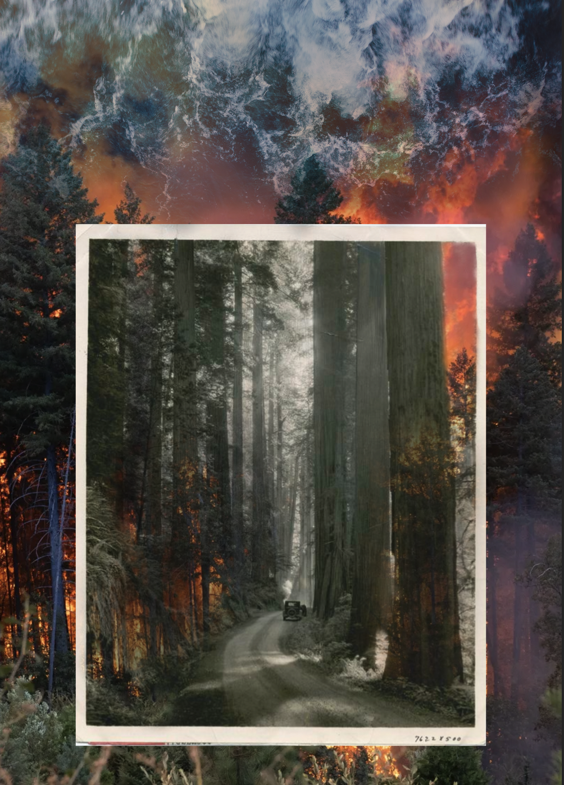

This is my homework 4.
The war in Gaza and the ongoing conflict in Palestine is something that I feel very strongly about. The death toll in Palestine has surpassed 64,000 since October of 2023, many being civilians and innocent bystanders. Israeli forces are blocking medical supplies, food, and care to people in Gaza, causing a humanitarian crisis and a famine. It’s shocking and deeply upsetting, and in this collage, I try to combine historical and present images that can talk a little bit about that. A historic map which shows Palestine before 1948 is layered underneath an image taken by Ali Jadallah. Jadallah is a photojournalist documenting the war in a series titled Voices From Gaza. This particular image shows Palestinians in a car, seeking refuge in January of 2024. I added a paper texture and adjusted the hue so it blended in with the map a bit. I also added a keffiyeh and some images of watermelons, two symbols of Palestinian liberation that I see all over.
Wildfires have been present for my entire life, but have become much larger and more detrimental in recent years. I grew up in San Francisco, so I never really felt the threat of fire seasons growing up – it felt like something so far away from me and my life in a city. The first major wildfire that I felt really afraid of was the one in November of 2020 in Paradise. The sky glowed orange and ash fell to the ground, and school got cancelled for a few days. With every year that’s passed since then, the fire seasons have felt much grander and scarier. For this collage, I layered a historic image of the California Redwoods over a photo from the 2020 wildfires. I also included an image of water, to reference the recurring drought that California is always struggling with.
Home